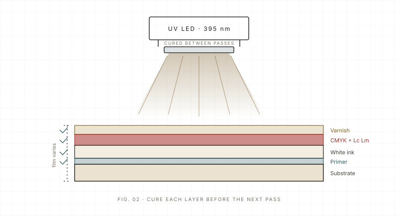

Principles Basic 5 min read Updated 2026-11
How UV ink actually cures
UV ink does not dry — it cures. A photoinitiator absorbs light around 395 nm and locks the film into a cross-linked network. Here is why touch-dry is not the same as cured, and what energy density really means.
The short answer: UV ink does not dry, it cures. The ink contains a photoinitiator that absorbs light around 395 nm from the LED lamp, splits into reactive radicals, and those radicals link the acrylate monomers and oligomers into a solid network in a fraction of a second. If the wavelength or the dose is wrong, the print can feel dry on the surface while the inside is still soft.
What is actually in a UV ink
A UV-curable ink is mostly monomer and oligomer, plus pigment, photoinitiator and a small amount of additive. There is little or no solvent to evaporate, which is why a UV print can be handled almost immediately and why the film thickness stays where the head put it. That last point matters: what you see on the substrate is very close to what was jetted.
- Photoinitiator: absorbs UV and starts the reaction; different grades match different lamp spectra.
- Monomer and oligomer: the reactive body of the film; they set hardness, flexibility and gloss.
- Pigment: gives colour and opacity but also blocks light, which is why thick white layers cure more slowly.
- Additives: wetting agents, defoamers and stabilisers that keep the ink printable and the film level.
Surface cure versus through-cure
Two things happen at different depths. At the surface, oxygen from the air reacts with the radicals and slows the reaction, so the top layer needs a high peak irradiance to skin over. Deeper down, oxygen is less of a problem but the pigment and the white layer absorb light, so the bottom needs enough total dose. That is why a lamp can make a glossy surface that still smears under a thumbnail twist.
| Parameter | What it means in practice |
|---|---|
| Wavelength | LED lamps peak around 395 nm; the photoinitiator must match that peak. |
| Irradiance (mW/cm²) | Instant power at the surface; drives surface cure and speed. |
| Dose (mJ/cm²) | Irradiance multiplied by dwell time; drives through-cure. |
| Ink film thickness | Thicker white or varnish needs more dose, not just more passes. |
| Substrate heat | LED cures cool compared with mercury lamps; still check thin films and heat-sensitive parts. |

Why 'touch-dry' is a dangerous test
A print that is dry to the touch can still fail a tape test, a cross-hatch test or a solvent rub. In our workshop we treat the thumbnail twist and the tape pull as the minimum check, and we do them after the part has cooled, not straight out from under the lamp. On flexible media we also bend the print around a small radius, because a brittle, under-cured film cracks at the fold.
The practical rule is simple: match the lamp to the ink, measure the dose rather than trusting the display, and test the film the way the customer will use it. Curing is a physics problem before it is a software setting.